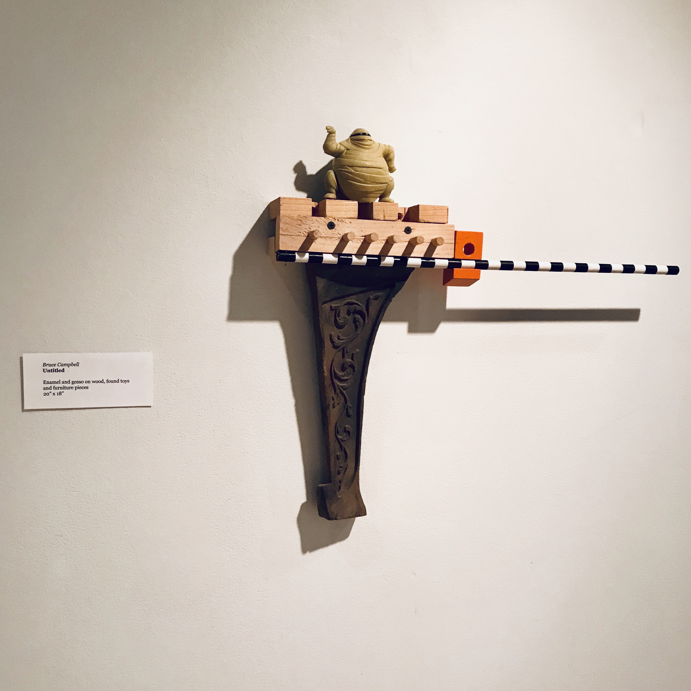
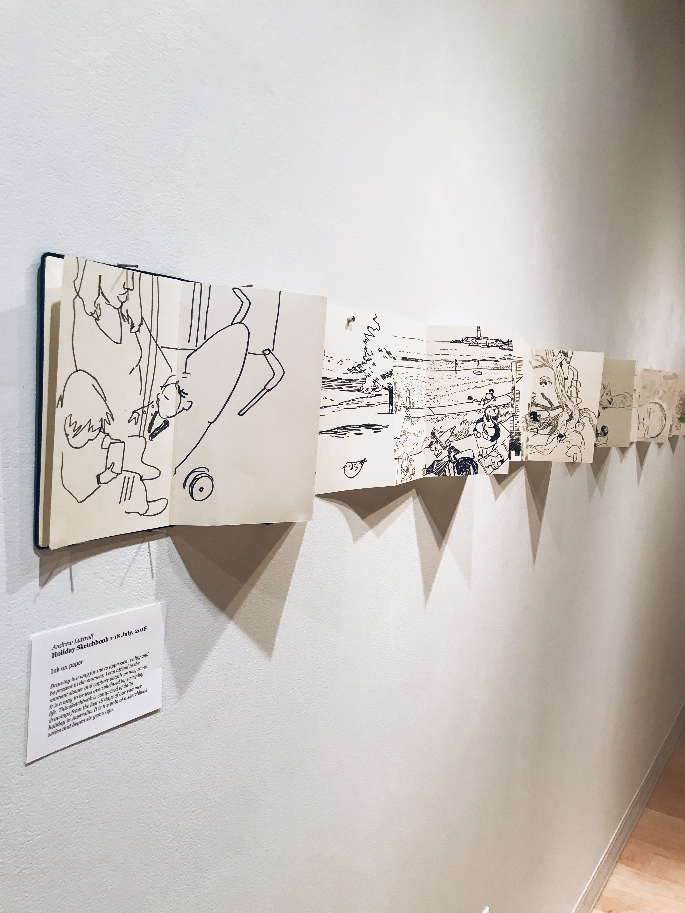

Williams Art Gallery

During class time on Wednesday, February 13th, 2019, as a group we went downstairs to attend the 2019 IWU Faculty and Staff Show. The part that I found most interesting about the experience was the faculty and staff getting a turn to create something for the students. Usually the student shows in the Williams Art Gallery, the 1920 Gallery, and in courses, the students create for the professors. It was exciting to see the faculty and staff art pieces be represented and shared.
The two pieces that were most fascinating to me were Bruce Campbell’s Untitled toy and furniture piece and the Holiday Sketchbook presented by Andrew Luttrull. In Bruce Campbell’s piece, he used enamel and gesso, toys that he found, and various furniture pieces. He combined all the parts and created a design out of them. The reason I was attracted to this piece is that it made me think of all the toys, coins, and other small items that have been lost in couches and other forms of furniture. It gave me a slight hint of nostalgia to when I was younger, dropping toys through the couch cushions only to find them months later covered in dust.
The holiday sketchbook illustrated by Andrew Luttrull was not only attention-grabbing because of the sketches, but also the way the sketches were presented. These horizontal drawings stretched out in that fashion gave the sense of these events happening over the course of a week or month. Also, I made the observation that the first sketches were more loose, and as the drawings progressed they got more defined and colored representing that the newest memories are still fresh in his mind, while the older memories are fading. The sketches of the children and environment were drawn very well. In general, the 2019 IWU Faculty and Staff Show was a positive experience.